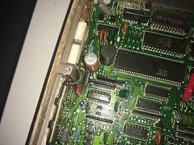
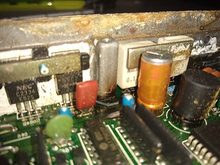
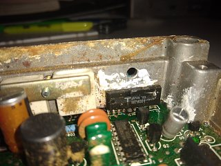
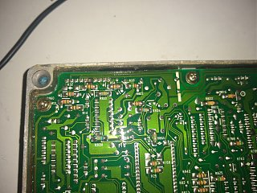

-
I recently have been trying to get my 86NA back on the road. I found an 86NA ECU on ebay, plugged it in, and started things up. The car ran, but as it was running I noticed that blue smoke was coming out of the ECU. Of course, I shut off the car and unplugged the battery, but the car didn't die on it's own. I'm curious what is going on, and if this ECU is toast. I also want to figure out what the problem is before I end up sacrificing more ECUs.
1986 300ZX N/A 5Speed project. Needs work, but that's the point, isn't it? -
Open up the ECU and have a look, if it was smoking it should be noticeable.
In my case it was repairable and i found the problem in the injector harness i had rewired.
84 AE/Shiro #683/Shiro #820/84 Turbo -
If it was the first time you used the ECU, you probably bought a bad ECU. Is the car's wiring harness really hacked up, though? -
Yeah the harness is pretty bad, but as far as I can tell it didn't blow the 85T ECU I had in it before. I'll check the injector wiring, because I did redo it at one point to try dropping resistors then undid it. Still post campaign wiring too. Maybe I re-check the wiring and put it back to stock and try again. I'll open the ecu and post a picture too, I had it open earlier today so I have a direct comparison…
Edit: That wording is a little confusing. At one point, I wired back to pre campaign and installed dropping resistors to try an 88na ECU. Then, I bought new injector connectors and wired back to batch fire mode and took the resistors out. Needless to say, the harness has been fucked with quite a bit between the service campaign and myself. So I'll check everything over and probably wire back to stock, then check the ECU, and try again.
Z Karma, what component did you have to replace? I will say that my car did start, but ended up releasing a lot more smoke…Last edited by designate72; 09-18-2019, 05:54 PM.
1986 300ZX N/A 5Speed project. Needs work, but that's the point, isn't it? -
Yeah I'm not sure if I'm going to be fixing it. A component is one thing, but I'm not sure about the trace. Any idea how to track down what components these are and what they control? That way I can at least try to find the short or problem and not burn up another ecu.   
1986 300ZX N/A 5Speed project. Needs work, but that's the point, isn't it? -
Okay another odd thing I noticed. First off, the fuel pump is always on, no matter what ECU I use. From reading other threads, it sounds like it should switch off at some point. Second, the 85T ECU still seems to work and doesn't smoke. Could the ECU itself have been bad?
1986 300ZX N/A 5Speed project. Needs work, but that's the point, isn't it? -
Using an Ohm meter and a magnification lens of some type, i'd try to back track that trace to a pin on one of the ECU connectors and use the FSM to find out where it goes.
It's always possible that the ECU was bad. Also, the 85T ECU uses a different O2 sensor than the 86NA http://redz31.suomiz.net/pages/interchange.html
Check the wiring in the passenger B-pillar to see if someone bypassed the fuel pump relay, or the blue connector underneath the rear hatch carpet near the passenger wheel well.
Those blue connectors can sometimes melt and an alternative is to wire a switched 12v signal to the pump as a bandaid fix.
84 AE/Shiro #683/Shiro #820/84 Turbo -
I rewired the injectors to stock and cleaned up the harness a bit. Now the car starts and runs with either the 85T ECU or the 86NA ecu. Neither ECU makes more smoke, but maybe they're already burned out… I have a new 86 NA Auto ECU that I want to try at some point, but right now I'm still a little hesitant. There are a lot of leads on the harness that are just clipped, and I don't know where they should go. Some are from the previous owner deleting things, and I did get rid of most of the idle/EGR stuff as well. I'm just trying to make sure all the essential sensors are plugged in. Right now I have MAF, CHTS, CAS, O2, TPS, fuel temp, and the temp sensor in the lower intake manifold.
1986 300ZX N/A 5Speed project. Needs work, but that's the point, isn't it? -
Just as an update to the thread, I did try the 86NA Auto ECU and to be honest, can't really tell a difference from the 86 NA/MT ECU that clearly had something burn up. Don't know if that's bad or good. But, I will say the car doesn't seem to be shorting out the new ECU, so hopefully that's a good sign. May have another proper 86 NA/MT ECU in the mail, so fingers crossed that it a) works better and b) doesn't burn up.
1986 300ZX N/A 5Speed project. Needs work, but that's the point, isn't it? -
Someone said the Toshiba MP4001 is the injector driver. I have an ECU where it was burnt similarly. They were recently available on eBay. -
Makes sense, looks like that is what burned out. I did receive the 86NA 5 speed ECU, and it didn't burn up. So perhaps fixing the injector wiring did help. However, the car didn't run any better, so still tracking things down in that regard.
1986 300ZX N/A 5Speed project. Needs work, but that's the point, isn't it?

Copyright © 2006–. All rights reserved. Privacy Policy
Comment